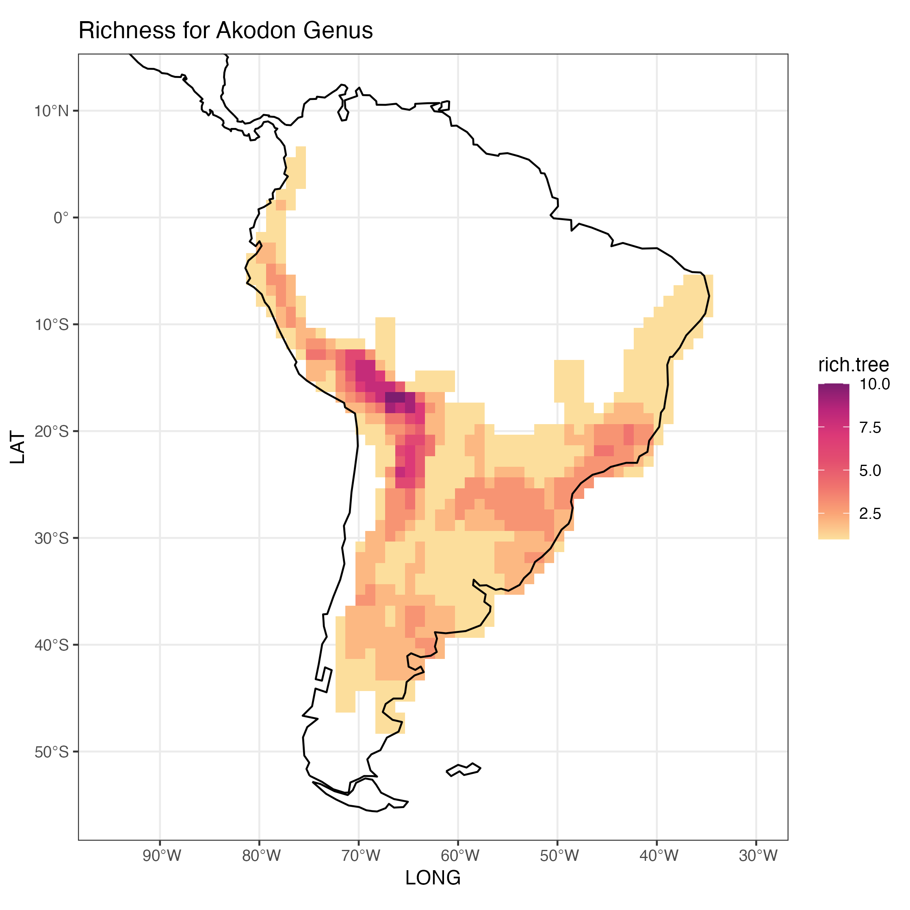
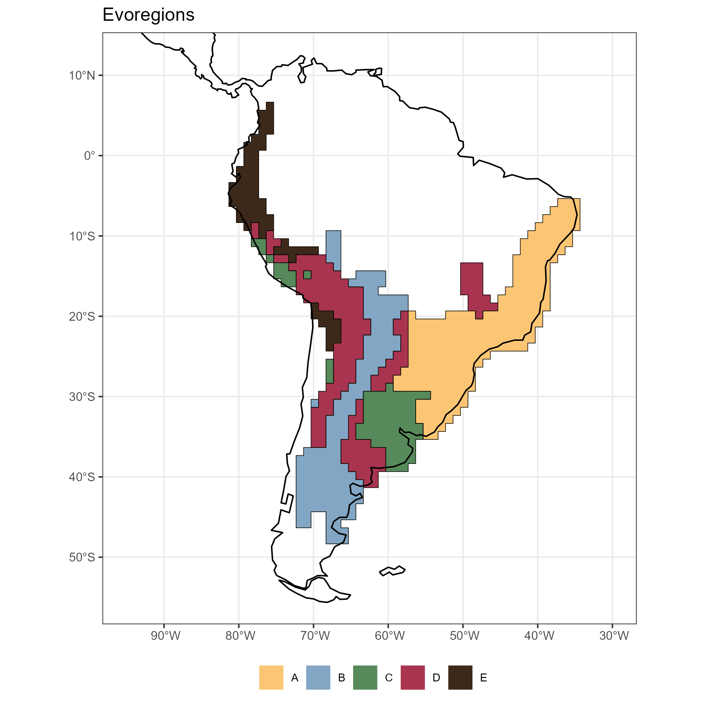
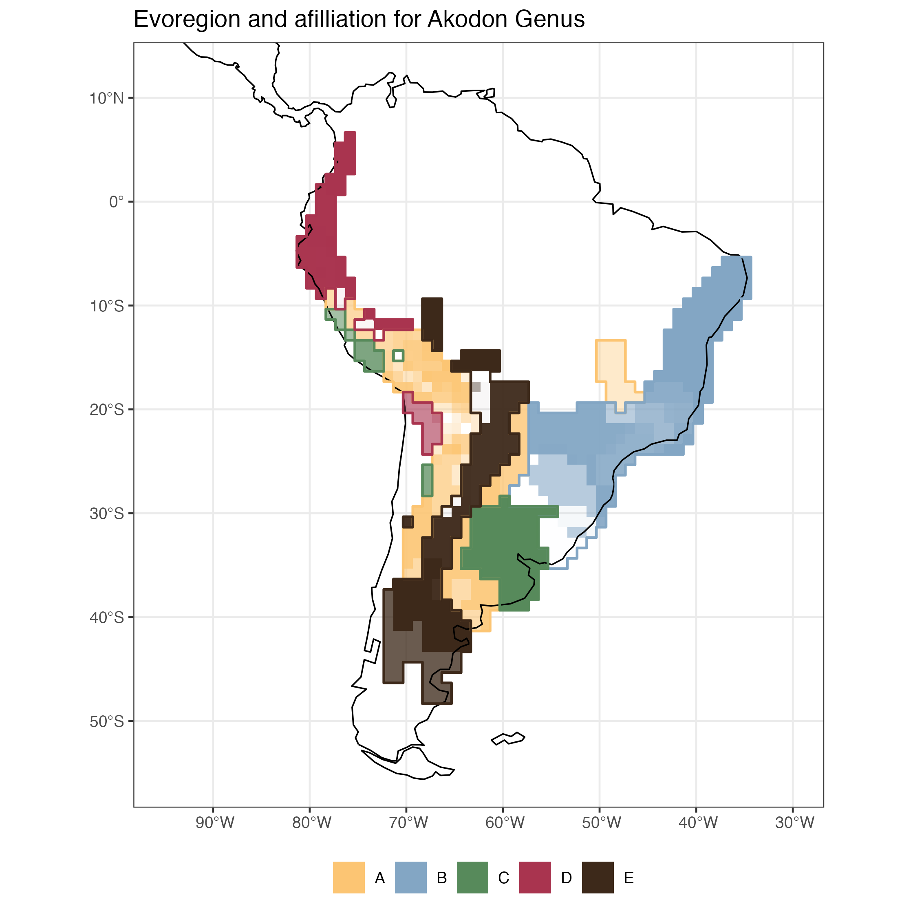
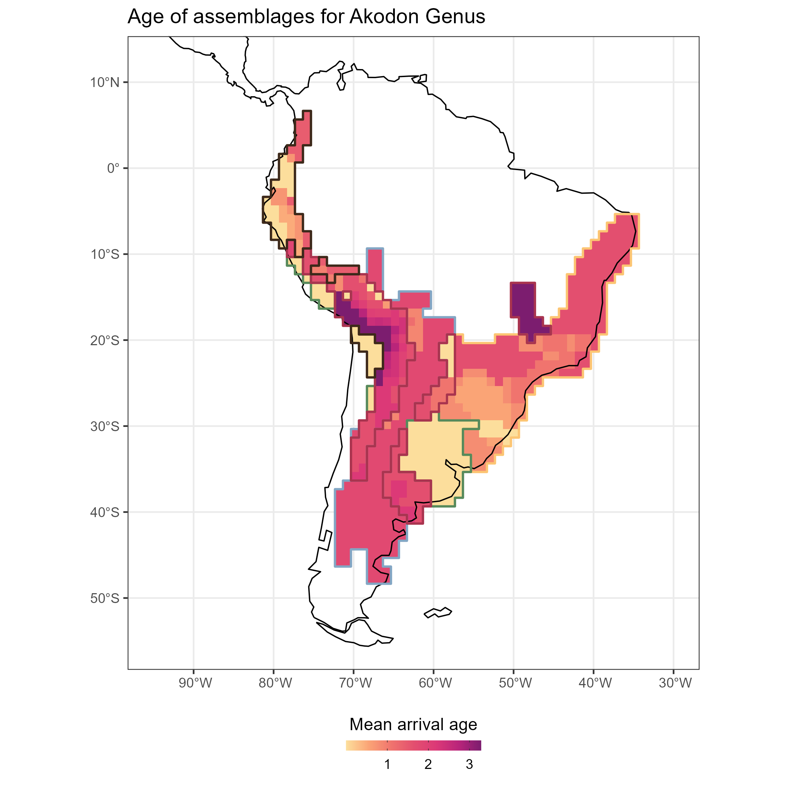
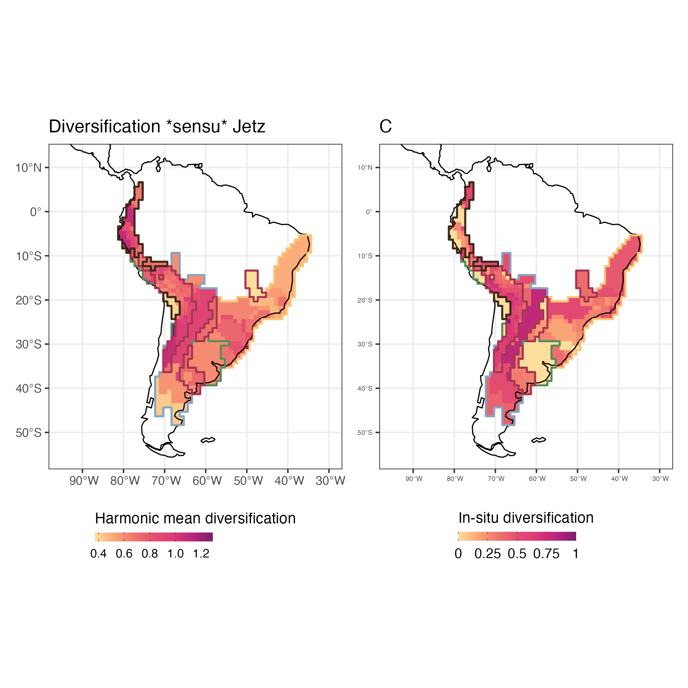
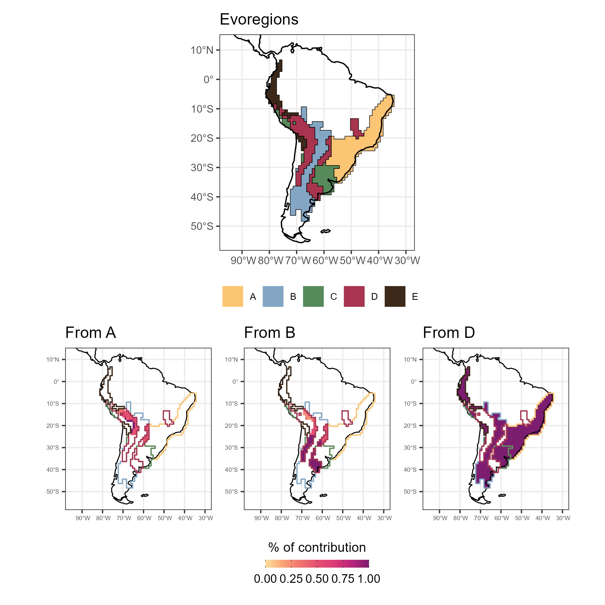
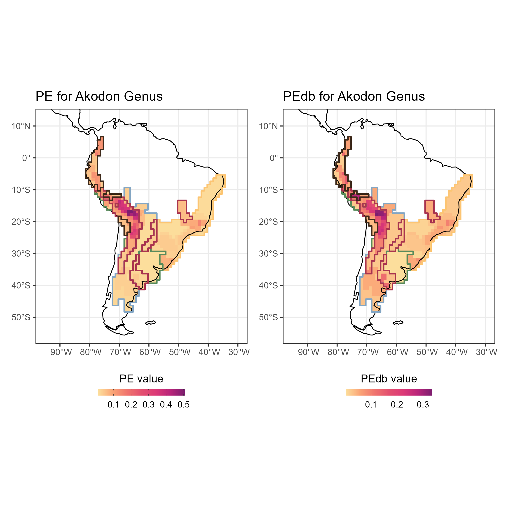

Introduction to Herodotools
2022-11-29
Intro_Herodotools_vignette.RmdHistory matters - some context on package name and aims
Historical events affects our daily lives in many ways. Who has never asked himself what would happened if we have done something different in the past? Like in the classic movie by Frank Capra It’s a Wonderful Life, that latter was the inspiration for the book name by the great SJ Gould, changes in past events could change dramatically our present life. The same is true in the natural world, history matters a lot, and the distribution of species in ecological communities is a result of present and past events.
Like the ancient Greek historian and geographer Herodotus, our package aims to put together tools that allows to investigate in a systematic way the role of history, but instead of narrating kings and famous battles, we hope to help ecologist in explaining the natural world.
In this article we will show the main functions of
Herodotools. To do so we will evaluate the effects of deep
past processes, represented by diversification and historical dispersal,
on the structure and phenotype of assemblages of species from the genus
Akodon.
For this aim we will perform the following steps:
- Process raw occurrence data and phylogenetic information
-
Classify Akodon assemblages in meaningful
regions using
evoregionfunction - Calculate macroevolutionary model-based metrics of diversification using an ancestral state reconstruction model
- Calculate model-based community phylogenetic metrics
- Calculate ti/model-based metrics of trait macroevolutionary dynamics
Reading data and libraries
First, let’s read some libraries we will use to explore the data and produce the figures
library(ape)
library(picante)
library(dplyr)
library(tidyr)
library(purrr)
library(raster)
library(terra)
library(ggplot2)
library(stringr)
library(here)
library(sf)
library(rnaturalearth)
library(rcartocolor)
library(patchwork)If you do not have Herodotools installed use the following code to install the package from github repository:
devtools::install_github("GabrielNakamura/Herodotools")To read the files corresponding to the distribution of species, phylogenetic relationship and trait values (represented by body size) type:
library(Herodotools)
akodon.sites <- read.table(system.file("extdata", "Table_Akodon_coords_pa.txt", package = "Herodotools"),
header = TRUE)
akodon.newick <- ape::read.tree(system.file("extdata", "akodon.new", package = "Herodotools"))Data processing
Here we will perform a few data processing in order to get spatial and occurrence information
site.xy <- akodon.sites %>%
dplyr::select(LONG, LAT)
akodon.pa <- akodon.sites %>%
dplyr::select(-LONG, -LAT)Checking if species names between occurrence matrix and phylogenetic tree are matching
spp.in.tree <- names(akodon.pa) %in% akodon.newick$tip.label
akodon.pa.tree <- akodon.pa[, spp.in.tree]Exploring spatial patterns
Here we can observe the richness pattern for Akodon genus
coastline <- rnaturalearth::ne_coastline(returnclass = "sf")
map_limits <- list(
x = c(-95, -30),
y = c(-55, 12)
)
richness <- rowSums(akodon.pa.tree)
map_richness <-
dplyr::bind_cols(site.xy, richness = richness) %>%
ggplot2::ggplot() +
ggplot2::geom_raster(aes(x = LONG, y = LAT, fill = richness)) +
rcartocolor::scale_fill_carto_c(name = "Richness", type = "quantitative", palette = "SunsetDark") +
ggplot2::geom_sf(data = coastline) +
ggplot2::coord_sf(xlim = map_limits$x, ylim = map_limits$y) +
ggplot2::ggtitle("Richness for Akodon Genus") +
ggplot2::theme_bw()
Obtaining evoregions
Here we will use the function evoregion, originally
described in Maestri
and Duarte (2020), and implemented in Herodotools package. This
method of classification allows to perform a biogeographical
regionalization based on a phylogenetic fuzzy
matrix coupled with a Discriminant
Analysis of Principal Components based on k-means non-hierarchical
clustering. Evoregions can be viewed as areas that correspond to
centers of independent diversification of lineages, reflecting the
historical radiation of single clades.
To calculate evoregions we need the occurrence matrix, a phylogenetic
tree and to define the maximum number of clusters allowed for the group
being analyzed. If the user decided to not inform the maximum number of
clusters, evoregion function will perform an automatic procedure based
on “elbow” method to set the maximum number of clusters. The “elbow”
method is implemented in package phyloregion.
It is worth note that the original proposition of evoregion method use a
bootstrapt method to define the maximmun number of clusters to be used
in the analysis. Here we opted to use the “elbow” method mainly due to
computational speed, since this method is faster than the
bootstrap-based method.
NOTE: The regions obtained from will present different names at each time that the analysis be performed, but the patterns will be the same. Consequently, if the user run the same code the evoregions will appear with different names.
regions <-
Herodotools::evoregions(
comm = akodon.pa.tree,
phy = akodon.newick
)
site.region <- regions$Cluster_EvoregionsWe have to transform the evoregion results to spatial object in order to visualize in a map the regions. This can be done using the following code:
evoregion.df <- data.frame(
site.xy,
site.region
)
r.evoregion <- terra::rast(evoregion.df)
# Converting evoregion to a spatial polygon data frame, so it can be plotted
sf.evoregion <- terra::as.polygons(r.evoregion) %>%
sf::st_as_sf()
# Downloading coastline continents and croping to keep only South America
coastline <- rnaturalearth::ne_coastline(returnclass = "sf")
map_limits <- list(
x = c(-95, -30),
y = c(-55, 12)
)
# Assigning the same projection to both spatial objects
sf::st_crs(sf.evoregion) <- st_crs(coastline)
# Colours to plot evoregions
col_five_hues <- c(
"#3d291a",
"#a9344f",
"#578a5b",
"#83a6c4",
"#fcc573"
)Evoregions can now be mapped using the following code
map_evoregion <-
evoregion.df %>%
ggplot2::ggplot() +
ggplot2::geom_raster(aes(x = LONG, y = LAT, fill = site.region)) +
ggplot2::scale_fill_manual(
name = "",
labels = LETTERS[1:5],
values = rev(col_five_hues)
) +
ggplot2::geom_sf(data = coastline) +
ggplot2::geom_sf(
data = sf.evoregion,
color = "#040400",
fill = NA,
size = 0.2) +
ggplot2::coord_sf(xlim = map_limits$x, ylim = map_limits$y) +
ggplot2::ggtitle("A") +
ggplot2::theme_bw() +
ggplot2::theme(
legend.position = "bottom",
axis.title = element_blank(),
axis.text = element_text(size = 5),
plot.subtitle = element_text(hjust = 0.5),
legend.text = element_text(family = "Arial", color = "black", size = 8)
)
evoregion produced five distinct regions, but not all
cells have the same degree of affiliation in associated with the region
in which it was classified. Cells with high affiliation indicates
assemblages that are more similar to all the other cells presented in
the region, on the other hand assemblages with low values of affiliation
correspond to turnover
areas, in other words, areas with multiple events of colonization by
different lineages.
# Selecting only axis with more than 5% of explained variance from evoregion output
axis_sel <- which(regions$PCPS$prop_explainded >= regions$PCPS$tresh_dist)
PCPS_thresh <- regions$PCPS$vectors[, axis_sel]
# distance matrix using 4 significant PCPS axis accordingly to the 5% threshold
dist_phylo_PCPS <- vegan::vegdist(PCPS_thresh, method = "euclidean")
# calculating affiliation values for each assemblage
afi <- affiliation_evoreg(phylo.comp.dist = dist_phylo_PCPS,
groups = regions$Cluster_Evoregions)
# binding the information in a data frame
sites <- bind_cols(site.xy, site.region = site.region, afi)Now we can map both evoregions and the affiliation of each cell. The degree of affiliation of cells are showed as the degree of fade for each color. As fade the color of the cell, lesser the affiliation of that cell to its evoregion. Those cell can be interpreted as being zones of high phylogenetic turnover.
map_joint_evoregion_afilliation <-
evoregion.df %>%
ggplot() +
ggplot2::geom_raster(aes(x = LONG, y = LAT, fill = site.region),
alpha = sites[, "afilliation"]) +
ggplot2::scale_fill_manual(
name = "",
labels = LETTERS[1:5],
values = rev(col_five_hues)
) +
ggplot2::geom_sf(data = coastline, size = 0.4) +
ggplot2::geom_sf(
data = sf.evoregion,
color = rev(col_five_hues),
fill = NA,
size = 0.7) +
ggplot2::coord_sf(xlim = map_limits$x, ylim = map_limits$y) +
ggplot2::ggtitle("Evoregion and afilliation for Akodon Genus") +
guides(guide_legend(direction = "vertical")) +
ggplot2::theme_bw() +
ggplot2::theme(
legend.position = "bottom",
axis.title = element_blank()
)
Ancestral area reconstruction for Akodon species
In this section we will show how Herodotools can use the results that comes from macroevolutionary analysis, particularly analysis of ancestral state reconstruction, to understand the role of diversification and historical dispersal at assemblage level. For this we will use an ancestral area reconstruction performed using BioGeoBEARS, a tool commonly used in macroevolution studies.
First, we have to define the occurrence of each species regarding the evoregions. This will correspond to the current area of species.
Herodotools::a_region <- region_occ(comm = akodon.pa.tree, site.region = site.region)The object created in the last step can be used in an auxiliary function present in Herodotools to easily produce the Phyllip file required to run the analysis of ancestral area reconstruction using BioGeoBEARS.
# save phyllip file
Herodotools::tipranges_to_BioGeoBEARS(
a_region,
# please set a new path to save the file
filename = here("inst", "extdata", "geo_area_akodon.data"),
areanames = NULL
)Since it take some time to run BioGeoBEARS (about 15 minutes in a 4GB
processor machine), and this is not the objective of this tutorial to
show how to run a reconstruction using BioGeoBEARS we can just read a
reconstruction model perfomed using DEC model to reconstruct the
evoregions. However if you want to see the code we used to run the
BioGeoBEARS models, here is the code
file.edit(system.file("extdata", "script", "e_01_run_DEC_model.R", package = "Herodotools")).
Read the file containing the results of DEC model reconstruction:
# ancestral reconstruction
load(file = system.file("extdata", "resDEC_akodon.RData", package = "Herodotools")) It is worth to note that the procedures decribed from here will work with any model of ancestral area reconstruction, but for sake of simplicity we decided to use only the DEC model.
Merging macroevolutionary models with assemblage level metrics
Once we have an occurrence data distribution, a biogeographical
regionalization (obtained with evoregions function) and the
ancestral area reconstruction we can integrate those three information
to calculate metrics that represents historical variables at any spatial
scale.
Age of assemblages
Let’s start by calculating the age of each cell considering the macroevolutionary dynamics of occupancy of regions during time. The age here corresponds to the mean arrival time of each species occupying a given assemblage. By arrival time we mean the most ancient ancestor from a lineage that arrived at the assemblage within a region in which the current species occur today. For the original description of this metric see Van Dijk et al. 2021
# converting numbers to character
biogeo_area <- data.frame(biogeo = chartr("12345", "ABCDE", evoregion.df$site.region))
# getting the ancestral range area for each node
node.area <-
Herodotools::get_node_range_BioGeoBEARS(
resDEC,
phyllip.file = here("inst", "extdata", "geo_area_akodon.data"),
akodon.newick,
max.range.size = 4
)
# calculating age arrival
age_comm <- Herodotools::age_arrival(W = akodon.pa.tree,
tree = akodon.newick,
ancestral.area = node.area,
biogeo = biogeo_area) The function age_arrival returns a object containing the
mean age for each assemblage. Species in which the transition to the
current region occurred between the last ancestor and the present can be
dealt in two ways: the default is by represent it as a low arrival value
for those species, and another option is to attribute the age
corresponding to half of the branch length connecting the ancestor to
the present time. Here we adopted the first option.
With mean age for each assemblage we can map the ages for all assemblages
sites <- dplyr::bind_cols(site.xy, site.region = site.region, age = age_comm$mean_age_per_assemblage)
map_age <-
sites %>%
ggplot() +
ggplot2::geom_raster(aes(x = LONG, y = LAT, fill = mean_age_arrival)) +
scale_fill_carto_c(type = "quantitative",
palette = "SunsetDark",
direction = 1,
limits = c(0, 3.5), ## max percent overall
breaks = seq(0, 3.5, by = .5),
labels = glue::glue("{seq(0, 3.5, by = 0.5)}")) +
ggplot2::geom_sf(data = coastline, size = 0.4) +
ggplot2::geom_sf(
data = sf.evoregion,
color = rev(col_five_hues),
fill = NA,
size = 0.7) +
ggplot2::coord_sf(xlim = map_limits$x, ylim = map_limits$y) +
ggplot2::ggtitle("B") +
ggplot2::ggplot2::theme_bw() +
ggplot2::labs(fill = "Mean age (Myr)") +
ggplot2::guides(fill = guide_colorbar(barheight = unit(2.3, units = "mm"),
direction = "horizontal",
ticks.colour = "grey20",
title.position = "top",
label.position = "bottom",
title.hjust = 0.5)) +
ggplot2::theme(
legend.position = "bottom",
axis.title = element_blank(),
legend.text = element_text(size = 10),
axis.text = element_text(size = 5),
plot.subtitle = element_text(hjust = 0.5)
)
Model-based diversification metrics
We can also calculate measures of diversification considering the macroevolutionary dynamics of ancestor area. The new measures allows to decompose the effects of two macroevolutionary process: in situ diversification and historical dispersal. Here we will illustrate this by calculating a common tip-based diversification measure propposed by Jetz 2012 that consists in the inverse of equal-splits measure called Diversification Rate (DR).
We modified the original metric to take into account only the portion of evolutionary history that is associated with the region in which the species currently occupy, this value represent the diversification that occurred due to in situ diversification process
akodon_diversification <-
Herodotools::db_diversification(W = akodon.pa.tree,
tree = akodon.newick,
ancestral.area = node.area,
biogeo = biogeo_area,
diversification = "jetz",
type = "equal.splits")The result of db_diversification function is composed by
a data-frame containing the value of in-situ diversification for each
species in each assemblage and a vector with the harmonic mean in-situ
diversification for each assemblage. As with age, we can plot the model
based diversification metric to look at the spatial patterns of in-situ
diversification in Akodon assemblages.
sites <- dplyr::bind_cols(site.xy,
site.region = site.region,
age = age_comm$mean_age_per_assemblage,
diversification_model_based = akodon_diversification$model_based_Jetz_harmonic_mean_site,
diversification = akodon_diversification$Jetz_harmonic_mean_site)
map_diversification <-
sites %>%
ggplot2::ggplot() +
ggplot2::geom_raster(aes(x = LONG, y = LAT, fill = diversification)) +
scale_fill_carto_c(type = "quantitative", palette = "SunsetDark") +
ggplot2::geom_sf(data = coastline, size = 0.4) +
ggplot2::geom_sf(
data = sf.evoregion,
color = rev(col_five_hues),
fill = NA,
size = 0.7) +
ggplot2::coord_sf(xlim = map_limits$x, ylim = map_limits$y) +
ggplot2::ggtitle("Diversification *sensu* Jetz") +
ggplot2::ggplot2::theme_bw() +
ggplot2::labs(fill = "Harmonic mean diversification") +
ggplot2::guides(fill = guide_colorbar(barheight = unit(2.3, units = "mm"),
direction = "horizontal",
ticks.colour = "grey20",
title.position = "top",
label.position = "bottom",
title.hjust = 0.5)) +
ggplot2::theme(
legend.position = "bottom",
axis.title = element_blank()
)
map_diversification_model_based <-
sites %>%
ggplot2::ggplot() +
ggplot2::geom_raster(aes(x = LONG, y = LAT, fill = diversification_model_based)) +
scale_fill_carto_c(type = "quantitative",
palette = "SunsetDark",
direction = 1,
limits = c(0, 1), ## max percent overall
breaks = seq(0, 1, by = .25),
labels = glue::glue("{seq(0, 1, by = 0.25)}")) +
ggplot2::geom_sf(data = coastline, size = 0.4) +
ggplot2::geom_sf(
data = sf.evoregion,
color = rev(col_five_hues),
fill = NA,
size = 0.7) +
ggplot2::coord_sf(xlim = map_limits$x, ylim = map_limits$y) +
ggplot2::ggtitle("C") +
ggplot2::ggplot2::theme_bw() +
ggplot2::labs(fill = "In-situ diversification") +
ggplot2::guides(fill = guide_colorbar(barheight = unit(2.3, units = "mm"),
direction = "horizontal",
ticks.colour = "grey20",
title.position = "top",
label.position = "bottom",
title.hjust = 0.5)) +
ggplot2::theme(
legend.position = "bottom",
axis.title = element_blank(),
legend.text = element_text(size = 10),
axis.text = element_text(size = 5),
plot.subtitle = element_text(hjust = 0.5)
)
map_diversification_complete <- map_diversification + map_diversification_model_based
Historical dispersal events
We can also calculate the importance of dispersal events related to
each ancestral range. By using the function dispersal_from
we can quantify the contribution of a given ancestral range to
historical dispersal of the species in an assemblage. This is done by
calculating the proportion of species in an assemblage that dispersed
from the focal ancestral range. This calculation is done accounting only
for the species that have events of dispersal in its ancestral
lineage.
akodon_dispersal <-
Herodotools::dispersal_from(W = akodon.pa.tree,
tree = akodon.newick,
ancestral.area = node.area,
biogeo = biogeo_area)We also can map the contribution of dispersal for all regions. Note that the area of ancestral range focused in each map have no values of dipersal from, since it is the source of dispersal to the other regions.
sites <- dplyr::bind_cols(site.xy,
site.region = site.region,
age = age_comm$mean_age_per_assemblage,
diversification = akodon_diversification$Jetz_harmonic_mean_site,
diversification_model_based = akodon_diversification$model_based_Jetz_harmonic_mean_site,
dispersal.D = akodon_dispersal[,1],
dispersal.A = akodon_dispersal[, 2],
dispersal.E = akodon_dispersal[, 3],
dispersal.BD = akodon_dispersal[, 4],
dispersal.B = akodon_dispersal[, 5])
map_dispersal_D <-
sites %>%
ggplot2::ggplot() +
ggplot2::geom_raster(aes(x = LONG, y = LAT, fill = dispersal.D)) +
scale_fill_carto_c(
type = "quantitative", palette = "SunsetDark", na.value = "white", limits = c(0,1)
) +
ggplot2::geom_sf(data = coastline, size = 0.4) +
ggplot2::geom_sf(
data = sf.evoregion,
color = rev(col_five_hues),
fill = NA,
size = 0.5) +
ggplot2::coord_sf(xlim = map_limits$x, ylim = map_limits$y) +
ggplot2::ggtitle("From D") +
ggplot2::ggplot2::theme_bw() +
ggplot2::labs(fill = "% of contribution") +
ggplot2::guides(fill = guide_colorbar(barheight = unit(2.3, units = "mm"),
direction = "horizontal",
ticks.colour = "grey20",
title.position = "top",
label.position = "bottom",
title.hjust = 0.5)) +
ggplot2::theme(
legend.position = "bottom",
axis.title = element_blank(),
legend.text = element_text(size = 10),
axis.text = element_text(size = 5),
plot.subtitle = element_text(hjust = 0.5)
)
map_dispersal_A <-
sites %>%
ggplot2::ggplot() +
ggplot2::geom_raster(aes(x = LONG, y = LAT, fill = dispersal.A)) +
scale_fill_carto_c(
type = "quantitative", palette = "SunsetDark", na.value = "white", limits = c(0,1)
) +
ggplot2::geom_sf(data = coastline, size = 0.4) +
ggplot2::geom_sf(
data = sf.evoregion,
color = rev(col_five_hues),
fill = NA,
size = 0.5) +
ggplot2::coord_sf(xlim = map_limits$x, ylim = map_limits$y) +
ggplot2::ggtitle("From A") +
ggplot2::ggplot2::theme_bw() +
ggplot2::labs(fill = "% of contribution") +
ggplot2::guides(fill = guide_colorbar(barheight = unit(2.3, units = "mm"),
direction = "horizontal",
ticks.colour = "grey20",
title.position = "top",
label.position = "bottom",
title.hjust = 0.5)) +
ggplot2::theme(
legend.position = "bottom",
axis.title = element_blank(),
legend.text = element_text(size = 10),
axis.text = element_text(size = 5),
plot.subtitle = element_text(hjust = 0.5)
)
map_dispersal_B <-
sites %>%
ggplot2::ggplot() +
ggplot2::geom_raster(aes(x = LONG, y = LAT, fill = dispersal.B)) +
scale_fill_carto_c(
type = "quantitative", palette = "SunsetDark", na.value = "white", limits = c(0,1)
) +
ggplot2::geom_sf(data = coastline, size = 0.4) +
ggplot2::geom_sf(
data = sf.evoregion,
color = rev(col_five_hues),
fill = NA,
size = 0.5) +
ggplot2::coord_sf(xlim = map_limits$x, ylim = map_limits$y) +
ggplot2::ggtitle("From B") +
ggplot2::ggplot2::theme_bw() +
ggplot2::labs(fill = "% of contribution") +
ggplot2::guides(fill = guide_colorbar(barheight = unit(2.3, units = "mm"),
direction = "horizontal",
ticks.colour = "grey20",
title.position = "top",
label.position = "bottom",
title.hjust = 0.5)) +
ggplot2::theme(
legend.position = "bottom",
axis.title = element_blank(),
legend.text = element_text(size = 10),
axis.text = element_text(size = 5),
plot.subtitle = element_text(hjust = 0.5)
)
map_dispersion_from <-
(map_evoregion + plot_layout(guides = "keep")) /
(map_dispersal_A | map_dispersal_B | map_dispersal_D) +
plot_layout(heights = c(1, .75), guides = "collect") &
ggplot2::theme(legend.position = "bottom")
Model based community phylogetic metrics
We also can calculate common used metrics in Community Phylogenetics, but now considering the macroevolutionary dynamics in the calculation. These model-based community phylogenetic metrics allows to disentangle the effects of in situ diversification and dispersal
akodon_db_metrics <-
Herodotools::div_based_metrics(W = akodon.pa.tree,
tree = akodon.newick,
ancestral.area = node.area,
biogeo = biogeo_area,
PD = TRUE,
PE = TRUE)As the other metrics we can plot PDdb and PEdb in a map
sites <- dplyr::bind_cols(site.xy,
site.region = site.region,
age = age_comm$mean_age_per_assemblage,
diversification = akodon_diversification$Jetz_harmonic_mean_site,
PE = akodon_db_metrics$PE,
PEdb = akodon_db_metrics$Db_PE,
PD = akodon_db_metrics$PD,
PDdb = akodon_db_metrics$PDlocal)
map_PE <-
sites %>%
ggplot2::ggplot() +
ggplot2::geom_raster(aes(x = LONG, y = LAT, fill = PE)) +
scale_fill_carto_c(type = "quantitative", palette = "SunsetDark") +
ggplot2::geom_sf(data = coastline, size = 0.4) +
ggplot2::geom_sf(
data = sf.evoregion,
color = rev(col_five_hues),
fill = NA,
size = 0.7) +
ggplot2::coord_sf(xlim = map_limits$x, ylim = map_limits$y) +
ggplot2::ggtitle("PE for Akodon Genus") +
ggplot2::ggplot2::theme_bw() +
ggplot2::labs(fill = "PE value") +
ggplot2::guides(fill = guide_colorbar(barheight = unit(2.3, units = "mm"),
direction = "horizontal",
ticks.colour = "grey20",
title.position = "top",
label.position = "bottom",
title.hjust = 0.5)) +
ggplot2::theme(
legend.position = "bottom",
axis.title = element_blank()
)
map_PEdb <-
sites %>%
ggplot2::ggplot() +
ggplot2::geom_raster(aes(x = LONG, y = LAT, fill = PEdb)) +
scale_fill_carto_c(type = "quantitative", palette = "SunsetDark") +
ggplot2::geom_sf(data = coastline, size = 0.4) +
ggplot2::geom_sf(
data = sf.evoregion,
color = rev(col_five_hues),
fill = NA,
size = 0.7) +
ggplot2::coord_sf(xlim = map_limits$x, ylim = map_limits$y) +
ggplot2::ggtitle("PEdb for Akodon Genus") +
ggplot2::ggplot2::theme_bw() +
ggplot2::labs(fill = "PEdb value") +
ggplot2::guides(fill = guide_colorbar(barheight = unit(2.3, units = "mm"),
direction = "horizontal",
ticks.colour = "grey20",
title.position = "top",
label.position = "bottom",
title.hjust = 0.5)) +
ggplot2::theme(
legend.position = "bottom",
axis.title = element_blank()
)
map_PEdb <- map_PE + map_PEdb
Tip-based metrics of trait evolution
Here we will show how to implement three tip-based metrics proposed
by Luza
et al. (2021). Note that these tip-based metrics were estimated
using the stochastic mapping of discrete/categorical traits (diet in the
original publication), but can be extended to other traits as we will
show here. The three tip-based metrics are Transition rates,
Stasis time, and Last transition time, and are
implemented in the function tip_based_trait_evo.
Transition rates indicate how many times the ancestral
character has changed over time. Stasis time indicates the
maximum branch length (time interval) which the current tip-character
was maintained across the whole phylogeny. Finally, last transition
time is the sum of branch lengths from the tip to the
prior/previous node with a reconstructed character equal to current
tip-character. As in the original
publication, we will use the stochastic character mapping on
discrete trait data. This time, however, we will reconstruct the species
foraging strata (Elton Traits’ database, Wilman et al. 2014). We will
reconstruct the foraging strata for 214 sigmodontine rodent species with
trait and phylogenetic data (consensus phylogeny of Upham
et al. 2019).
First we will load trait and phylogenetic data we need to run the
function tip_based_trait_evo.
rodent.phylo <- ape::read.nexus(
system.file("extdata", "Sigmodontinae_285speciesTree.tre", package = "Herodotools")
)
# traits
traits <- read.table(
system.file("extdata", "MamFuncDat.txt", package = "Herodotools"),
header = T, sep = "\t"
)
# adjust sciName for matching
traits$Scientific <- gsub (" ", "_", traits$Scientific)
traits <- traits[which(traits$Scientific %in% rodent.phylo$tip.label), ] # subset
traits <- traits[match(rodent.phylo$tip.label,traits$Scientific), ] # match to have the same order
traits <- traits[is.na(traits$Scientific) !=T,] #names not matching
rownames(traits) <- traits$Scientific
# match
match_data <- picante::match.phylo.data(rodent.phylo, traits)
trait <- match_data$data$ForStrat.Value
names(trait) <- match_data$data$Scientific
# run function
trans_rates <- tip_based_trait_evo(tree = match_data$phy,
trait = trait , # need to be named to work
nsim = 50,
method = c("transition_rates", "last_transition_time", "stasis_time"))Now we have in hand the estimates of the three tip-based metrics for 214 rodent species. We can summarize the tip-based metrics at the ecological assemblage scale. First we will load assemblage & geographic data comprising 1770 grid cells located at the Neotropics.
# load community data
comm.data <- read.table(
system.file("extdata", "PresAbs_228sp_Neotropical_MainDataBase_Ordenado.txt",
package = "Herodotools"),
header = T, sep = "\t"
)
# load latlong of these communities
geo.data <- read.table(
system.file("extdata", "Lon-lat-Disparity.txt", package = "Herodotools"),
header = T, sep = "\t"
)Now we calculate the values of tip-based metrics for all species for each assemblage.
# transition rates for each community
averaged_rates <- purrr::map_dfr(1:nrow(comm.data), function (i){
# across assemblages
purrr::map_dfr(trans_rates, function (sims) { # across simulations
# species in the assemblages
gather_names <- names(comm.data[i,][which(comm.data[i,]>0)]) # get the names
# subset of rates
rates <- sims[which(rownames (sims) %in% gather_names),
c("prop.transitions",
"stasis.time",
"last.transition.time")]
mean_rates <- apply(rates, 2, mean) # and calculate the average
mean_rates
}) %>%
purrr::map(mean)
})We will represent in space the variation in the tip-based metrics for rodent assemblages. It seems that, in general, assemblages of the southern, western and northeastern Neotropics have species with higher Transition Rates in foraging strata than communities from elsewhere (i.e., they have many species that often changed their foraging strata over time). Assemblage-level Stasis Time was high for two groups of assemblages: one from northeastern Neotropics, and another in central Amazonia. The first group in particular also showed high Transition Rates. Taken together, these results indicate that, despite the frequent changes in foraging strata, the species of northeastern assemblages retained their phenotipic state during more time than the species found elsewhere. Finally, the Last Transition Time metric shows that the transitions leading to the present species foraging strata were older in the i) north of the Amazonia and ii) central Mexico. These results are potentially reflecting i) the location of arrival of ancestral sigmodontine rodents in south America, and ii) the occurrence of several species closely related to basal lineages.
# prepare data to map
data_to_map_wide <- data.frame(geo.data[,c("LONG", "LAT")], averaged_rates)
data_to_map_long <-
data_to_map_wide %>%
tidyr::pivot_longer(
cols = 3:5,
names_to = "variables",
values_to = "values"
)
# create a list with the maps
list_map_transitions <- lapply(unique(data_to_map_long$variables), function(metric){
plot.title <- switch(
metric,
"prop.transitions" = "Transition Rates",
"stasis.time" = "Stasis Time",
"last.transition.time" = "Last Transition Time"
)
sel_data <-
data_to_map_long %>%
dplyr::filter(variables == metric)
var_range <- range(sel_data$values) %>% round(2)
var_breaks <- seq(var_range[1], var_range[2], diff(var_range/4)) %>% round(2)
sig_map_limits <- list(
x = range(sel_data$LONG),
y = range(sel_data$LAT)
)
ggplot() +
ggplot2::geom_raster(data = sel_data,
aes(x = LONG, y = LAT, fill = values)) +
rcartocolor::scale_fill_carto_c(
type = "quantitative",
palette = "SunsetDark",
na.value = "white",
limits = var_range,
breaks = var_breaks
)+
ggplot2::geom_sf(data = coastline, size = 0.4) +
ggplot2::coord_sf(xlim = sig_map_limits$x, ylim = sig_map_limits$y) +
ggplot2::ggplot2::theme_bw() +
ggplot2::guides(fill = guide_colorbar(barheight = unit(2.3, units = "mm"),
direction = "horizontal",
ticks.colour = "grey20",
title.position = "top",
label.position = "bottom",
title.hjust = 0.5)) +
ggplot2::labs(title = plot.title) +
ggplot2::theme(
legend.position = "bottom",
axis.title = element_blank(),
legend.title = element_blank(),
legend.text = element_text(size = 10),
axis.text = element_text(size = 5),
plot.subtitle = element_text(hjust = 0.5)
)
})
# Create map
mapTransition_rate <- patchwork::wrap_plots(list_map_transitions) +
patchwork::plot_annotation(tag_levels = "A")
References
Luza, A. L., Maestri, R., Debastiani, V. J., Patterson, B. D., Maria, S., & Leandro, H. (2021). Is evolution faster at ecotones? A test using rates and tempo of diet transitions in Neotropical Sigmodontinae ( Rodentia , Cricetidae ). Ecology and Evolution, December, 18676–18690. https://doi.org/10.1002/ece3.8476
Maestri, R., & Duarte, L. D. S. (2020). Evoregions: Mapping shifts in phylogenetic turnover across biogeographic regions Renan Maestri. Methods in Ecology and Evolution, 2020(August), 1652–1662. https://doi.org/10.1111/2041-210X.13492
Pigot, A. and Etienne, R. (2015). A new dynamic null model for phylogenetic community structure. Ecology Letters, 18(2), 153-163. https://doi.org/10.1111/ele.12395
Van Dijk, A., Nakamura, G., Rodrigues, A. V., Maestri, R., & Duarte, L. (2021b). Imprints of tropical niche conservatism and historical dispersal in the radiation of Tyrannidae (Aves: Passeriformes). Biological Journal of the Linnean Society, 134(1), 57–67. https://doi.org/10.1093/biolinnean/blab079